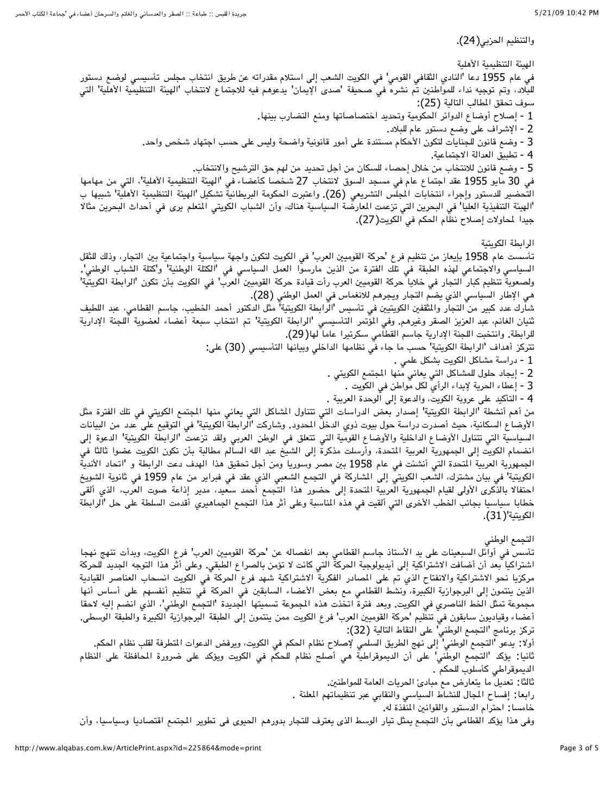
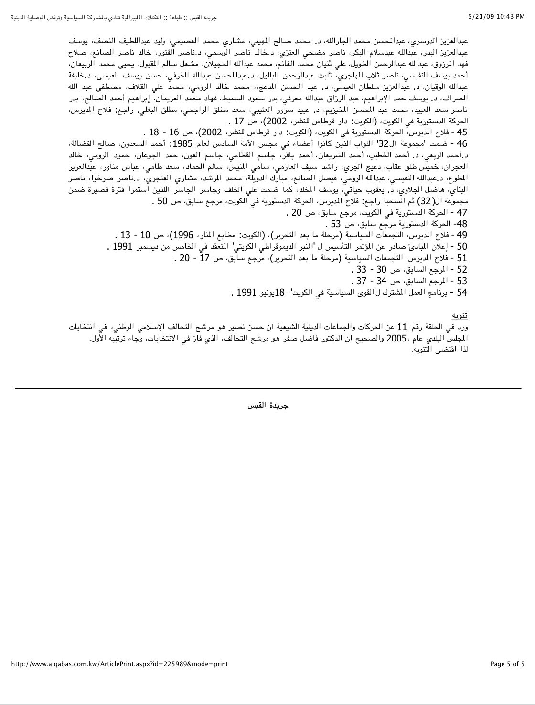

نوفمبر وديسمبر ٢٠٠٦م · صفحات من جريدة القبس، سلسلة «الحركات والجماعات السياسية في الكويت» بقلم أ. د. فلاح عبدالله المديرس، ٢٠٠٦م، مطبوعة من موقع الجريدة
القبس ٢٠٠٦: جاسم القطامي في سلسلة د. فلاح المديرس عن الحركات السياسية في الكويت
ما هي
١. تأسست «الرابطة الكويتية» عام ١٩٥٨م من التجار والمثقفين ومنهم الدكتور أحمد الخطيب وجاسم القطامي وعبداللطيف ثنيان الغانم وعبدالعزيز الصقر، وانتخبت لجنة إدارية من سبعة أعضاء اختارت جاسم القطامي سكرتيرا لها. ٢. وتأسس «التجمع الوطني» في أوائل السبعينات على يد جاسم القطامي بعد انفصاله عن حركة القوميين العرب، ودعا إلى الإصلاح السلمي والديمقراطية واحترام الدستور، وفي عام ١٩٨٠م أصدر القطامي والدكتور أحمد الخطيب بيانات مشتركة نشرتها مجلة الطليعة. ٣. وتذكر الهوامش مقابلة مع جاسم القطامي في جريدة السياسة ٢٥ مايو ١٩٧٤م، وتعده بين نواب مجموعة الـ٣٢ في مجلس الأمة عام ١٩٨٥م. ٤. وتذكر الحلقة الثالثة جاسم القطامي مع الدكتور أحمد الخطيب بين قيادات الكتلة الوطنية وحركة القوميين العرب.
أهميتها
رواية مؤرخ لمكانة جاسم عبدالعزيز القطامي في الحركة الوطنية الكويتية، من الرابطة الكويتية عام ١٩٥٨م إلى التجمع الوطني ومجلس ١٩٨٥م.
صور الصفحات





المصادر
أ. د. فلاح عبدالله المديرس، «الحركات والجماعات السياسية في الكويت»، جريدة القبس ٢٠٠٦م: الحلقة ٣، العدد ١٢٠٢٨، ٢٧ نوفمبر ٢٠٠٦م؛ والمقالان المطبوعان من موقع القبس برقمي ٢٢٥٨٦٤ و٢٢٥٩٨٩
كيف كُتب هذا النص: لم ترسل الصفحة الأولى من المقالين اللاحقين التي فيها رقم العدد وتاريخه. والحلقة الأولى من السلسلة (العدد ١١٨٥٤، ٤ يونيو ٢٠٠٦م) لا تذكر العائلة فلم تعرض.
افتح في الموقع التفاعلي